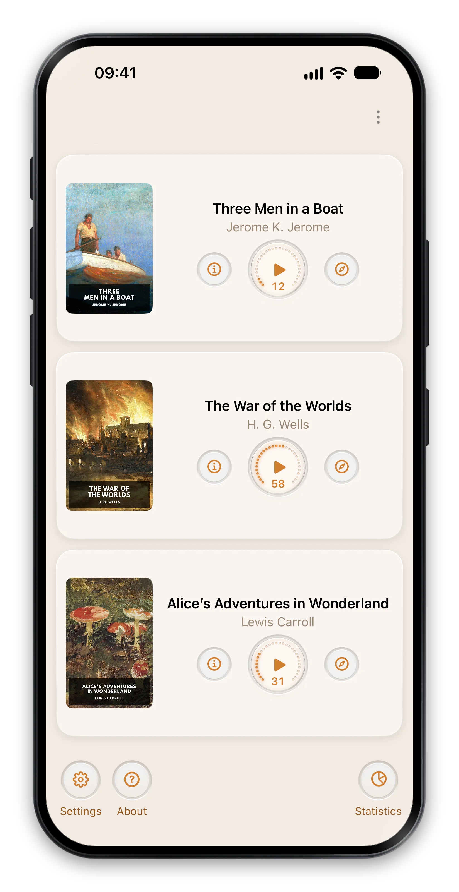
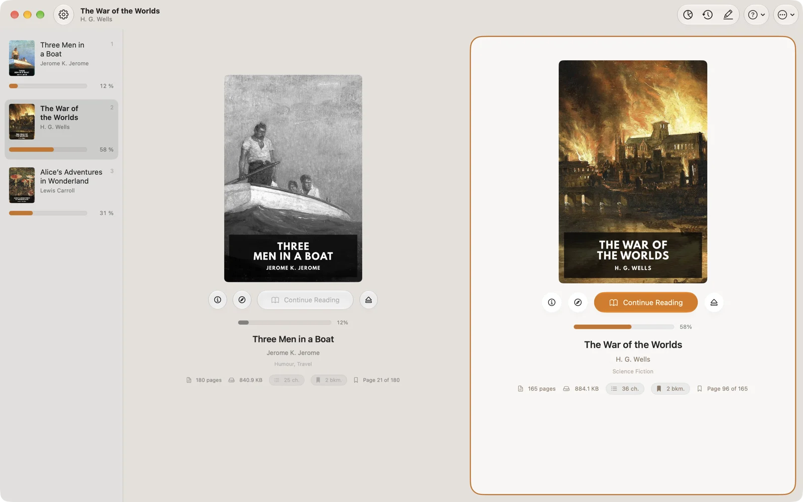
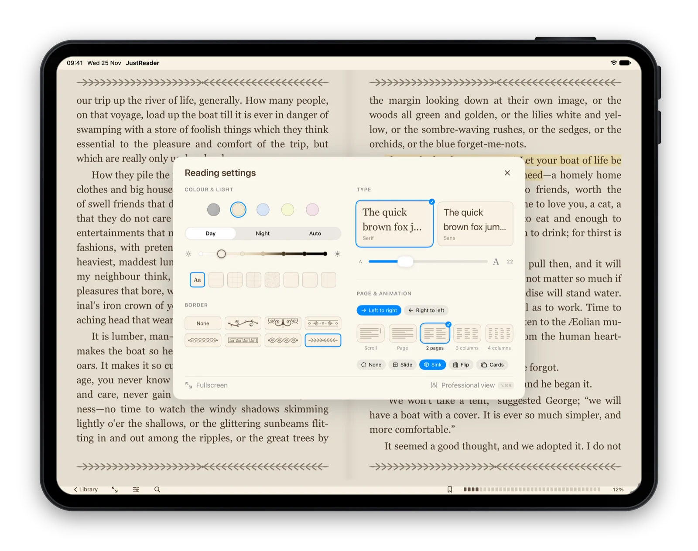
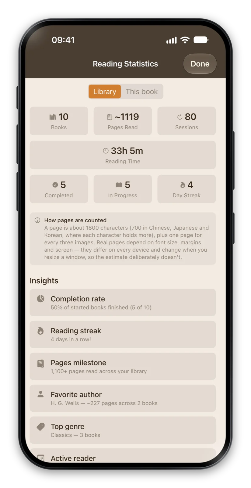
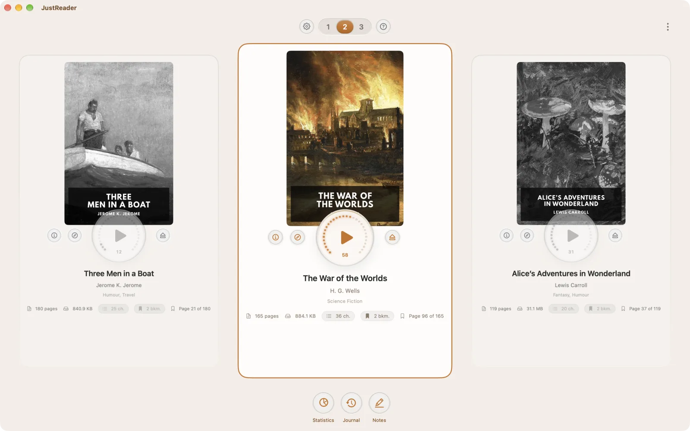
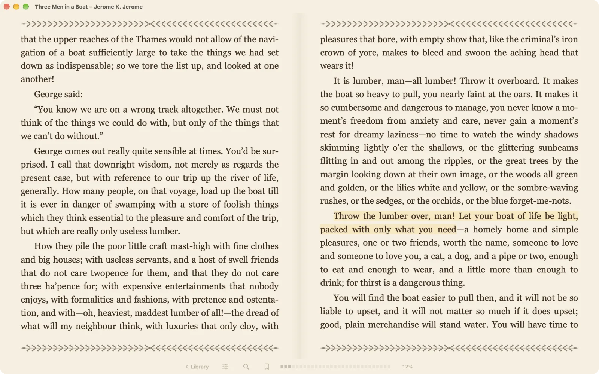

BookCommander
The Terminal skin is called BookCommander now, and PlainReader has it too. If you have a keyboard, there is a small Easter egg in it: click the command line and type help.

Three active books. Open a file and read. There is nothing to file: the books you are reading are the whole app.
Free, and no trial period. The reader is the bigger apps’ own, with everything it can do.




JustReader keeps three active books now. They show as cards or as a grid, side by side or one under another, depending on the device; on the iPhone they are pages you swipe between.

Paste an address, and JustReader fetches the book and opens it. The history remembers ten books now, and downloads a fetched one again when needed.
A patterned strip above the text and under it: vine, scrolls, lozenges, braid, meander, guilloche or laurel. Comfort has paper textures now and reads right to left.

The Terminal skin is called BookCommander now, and PlainReader has it too. If you have a keyboard, there is a small Easter egg in it: click the command line and type help.